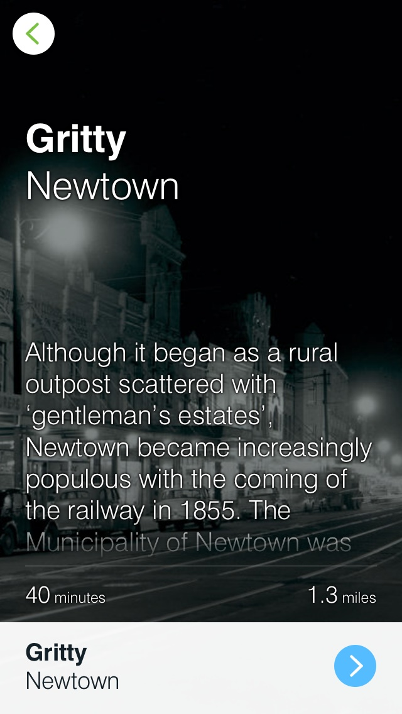

-

- 
-

Discover the story behind YININMADYEMI
Thou didst let fall.
This major new artwork in Hyde Park honours Aboriginal and Torres Strait Islander men and women who served in our nation's military. Artist Tony Albert created the work, inspired by the story of his grandfather Eddie Albert's narrow wartime escape and research by family historian Trisha Albert.